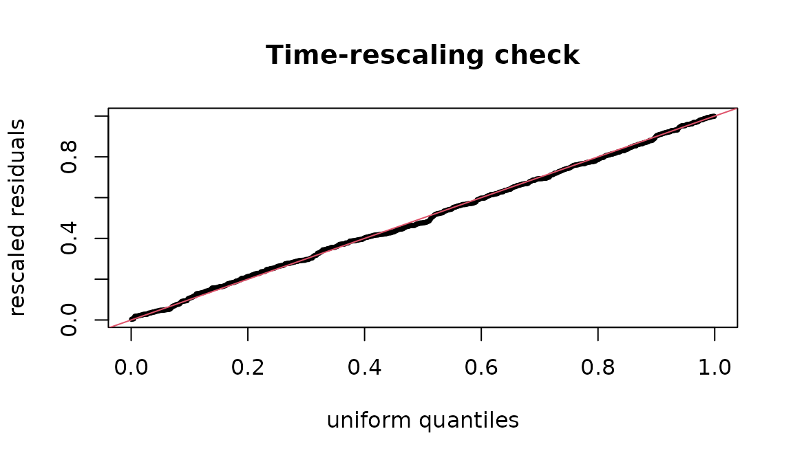

Hawkes processes: self-exciting event series
Source:vignettes/hawkes-processes.Rmd
hawkes-processes.RmdMany administrative event series cluster: one incident raises the chance of another soon after. A Hawkes process (Hawkes 1971) models this directly. Its conditional intensity, the instantaneous event rate given the past, is
a baseline rate plus a kernel that each past event adds and that decays with the time since it. The integral of the kernel, , is the branching ratio: the expected number of events each event directly triggers. When the process is stationary; is the fraction of events that are “children” of earlier events rather than arrivals from the baseline, which is often the quantity of substantive interest.
Simulating a Hawkes process
Ogata’s thinning algorithm simulates the process exactly: propose events from an upper bound on the intensity and keep each with probability . Here is an exponential kernel , whose branching ratio is :
simulate_hawkes <- function(mu, alpha, beta, horizon, seed = 1) {
set.seed(seed)
t <- 0
events <- numeric(0)
while (t < horizon) {
lambda_max <- mu + alpha * beta * sum(exp(-beta * (t - events)))
t <- t + stats::rexp(1, lambda_max)
if (t >= horizon) break
lambda_t <- mu + alpha * beta * sum(exp(-beta * (t - events)))
if (stats::runif(1) <= lambda_t / lambda_max) events <- c(events, t)
}
events
}
times <- simulate_hawkes(mu = 1, alpha = 0.5, beta = 2, horizon = 300)
length(times)
#> [1] 559Fitting
core_hawkes_fit() maximises the exact log-likelihood
with an analytic gradient in C (projected BFGS, with the parameters
bounded). theta holds the baseline, the branching ratio and
the kernel parameter:
fit <- core_hawkes_fit(times, horizon = 300, kernel = "exponential")
fit$theta
#> [1] 0.1027148 0.4073514 2.1590220
fit$branching_ratio
#> [1] 0.4073514The branching ratio is recovered close to the 0.5 the data were
simulated with, and the baseline close to 1. Four kernels are available:
exponential (memoryless decay), weibull and
gamma (a delayed peak), lomax (a heavy tail:
influence that fades slowly). Compare them by information criterion:
sapply(c("exponential", "weibull", "lomax"), function(k) {
core_hawkes_fit(times, 300, kernel = k)$aic
})
#> exponential weibull lomax
#> 352.1139 353.6296 354.1802A sinusoidal baseline lets the background rate follow a cycle (a weekly or seasonal pattern) instead of staying constant:
core_hawkes_fit(times, 300, kernel = "exponential", baseline = "sinusoidal")$aic
#> [1] 352.3058Checking the fit: time-rescaling residuals
If the fitted intensity is right, the compensator
turns the event times into a unit-rate Poisson process (the
time-rescaling theorem; Brown et al. 2002).
core_hawkes_residuals() returns the rescaled inter-event
quantities, which should then be uniform:
U <- core_hawkes_residuals(times, 300, "exponential", fit$theta)
stats::ks.test(U, "punif")$p.value
#> [1] 0.8168762
plot(stats::qunif(stats::ppoints(length(U))), sort(U), pch = 20, cex = .6,
xlab = "uniform quantiles", ylab = "rescaled residuals",
main = "Time-rescaling check")
abline(0, 1, col = 2)
A misspecified kernel shows as a departure from the diagonal; a p-value well below 0.05 says the model does not explain the clustering it was fitted to.
Events recorded to a resolution
Administrative data record dates, not instants. Many events on one
day are ties, and a Hawkes likelihood with tied times is
ill-defined (the kernel at lag zero). core_hawkes_jitter()
spreads each day’s events uniformly across that day, deterministically
from a seed, so the fit is reproducible and no two events coincide:
days <- c(0, 0, 0, 1, 3, 3)
core_hawkes_jitter(days)
#> [1] 0.1599104 0.2786011 0.7415649 1.3441907 3.0380302 3.8682281
anyDuplicated(core_hawkes_jitter(days))
#> [1] 0Fit on jittered times, and treat the day as the unit of the horizon.
Evaluating a likelihood directly
core_hawkes_nll() returns the negative log-likelihood at
given parameters, for profile plots, likelihood-ratio comparisons or a
check against another implementation:
core_hawkes_nll(times, 300, "exponential", fit$theta)
#> [1] 173.0569
core_hawkes_nll(times, 300, "exponential", fit$theta * 1.5)
#> [1] 193.815Boundaries and identifiability
A heavy-tailed kernel that tends to its exponential limit has a shape
parameter that is not identified; the fit then stops at the parameter
bound and says so (fit$at_bound), instead of reporting an
absurd estimate. Short series carry little information about the
kernel’s shape: with a few hundred events, compare kernels by AIC but do
not read much into the third decimal of a shape parameter.
References
Hawkes (1971). Spectra of some self-exciting and mutually exciting point processes. Biometrika 58(1). Ogata (1981). On Lewis’ simulation method for point processes. IEEE Trans. Inf. Theory. Brown, Barbieri, Ventura, Kass, Frank (2002). The time-rescaling theorem and its application to neural spike train data analysis. Neural Computation 14(2).